NCERT Solutions for Class 8 Science Chapter 4 Materials Metals and Non Metals
Topics and Sub Topics in Class 8 Science Chapter 4 Materials Metals and Non-Metals:
| Section Name | Topic Name |
| 4 | Materials Metals and Non-Metals |
| 4.1 | Physical Properties of Metals and Non-metals |
| 4.2 | Chemical Properties of Metals and Non-metals |
| 4.3 | Uses of Metals and Non-metals |
Materials: Metals and Non-Metals Class 8 Science NCERT Textbook Questions
Question 1.
Which of the following can be beaten into thin sheets?
(a) Zinc
(b) Phosphorus
(c) Sulphur
(d) Oxygen
Answer:
(a) Zinc
Question 2.
Which of the following statements is correct?
(a) All metals are ductile.
(b) All non-metals are ductile.
(c) Generally, metals are ductile.
(d) Some non-metals are ductile.
Answer:
(c) Generally, metals are ductile
Question 3.
Fill in the blanks.
(a) Phosphorus is a very ____ non-metal.
(b) Metals are _____ conductors of heat and _____
(c) Iron is ______ reactive than copper.
(d) Metals react with acids to produce ______ gas.
Answer:
(a) reactive
(b) good, electricity
(c) more
(d) hydrogen
Question 4.
Mark ‘T’ if the statement is true and ‘F’ if it is false.
(a) Generally, non-metals react with acids.
(b) Sodium is a very reactive metal.
(c) Copper displaces zinc from zinc sulphate solution.
(d) Coal can be drawn into wires.
Answer:
(a) False
(b) True
(c) False
(d) False
Question 5.
Some properties are listed in the following Table. Distinguish between metals and non-metals on the basis of these properties.
| Properties | Metals | Non-metals |
| 1. Appearance | ||
| 2. Hardness | ||
| 3. Malleability | ||
| 4. Ductility | ||
| 5. Heat Conduction | ||
| 6. Conduction of Electricity |
Answer:
| Properties | Metals | Non-metals |
| 1. Appearance | have metallic lustre | dull |
| 2. Hardness | hard | soft |
| 3. Malleability | malleable | non-malleable |
| 4. Ductility | ductile | non-ductile |
| 5. Heat Conduction | good conductors | bad conductors |
| 6. Conduction of Electricity | good conductors | bad conductors/insulators |
Question 6.
Give reasons for the following.
(a) Aluminium foils are used to wrap food items.
(b) Immersion rods for heating liquids are made up of metallic substances.
(c) Copper cannot displace zinc from its salt solution.
(d) Sodium and potassium are stored in kerosene.
Answer:
(a) Aluminium is highly malleable and it can be easily beaten in sheets to make its foil for wrapping purposes. It is also soft and does not react with food items. That is why aluminium foils are used . to wrap food items.
(b) Immersion rods made up of metallic substances because metals are good conductors of heat and electricity. They get hot very soon on the passage of electric current and warm the water.
(c) Copper is less reactive than zinc. So it cannot displace zinc from its solution.
(d) Sodium and potassium are highly reactive, so they are stored in kerosene.
Question 7.
Can you store the lemon pickle in an aluminium utensil? Explain.
Answer:
No, we cannot store lemon pickle in an aluminium utensil because aluminium is a metal and metals readily react with acids to produce hydrogen. When aluminium comes in contact with lemon, which is acidic, would react to give hydrogen and the pickles will be spoiled.
Question 8.
Match the substances given in column A with their uses given in column B.
| A | B |
| Gold | Thermometers |
| Iron | Electric wire |
| Aluminium | Wrapping food |
| Carbon | Jewellery |
| Copper | Machinery |
| Mercury | Fuel |
Answer:
(i) (d)
(ii) (e)
(iii) (c)
(iv) (f)
(v) (b)
(vi) (a)
Question 9.
What happens when
(a) Dilute sulphuric acid is poured on a copper plate?
(b) Iron nails are placed in a copper sulphate solution?
Write word equations of the reactions involved.
Answer:
(a) No reaction will take place because copper is very less reactive.
(b) Iron being more reactive than copper will replace copper from its solution and brown coating of copper is deposited on the iron nails. Also, the blue colour turns green.
Iron + Copper sulphate (solution) → Iron sulphate (solution) + Copper
Question 10.
Saloni took a piece of burning charcoal and collected the gas evolved in a test tube.
(a) How will she find the nature of the gas?
(b) Write down the word equations of all the reactions taking place in this process.
(a) She can find the nature of the gas by using a wet litmus paper. After bringing the litmus paper in contact with the gas, if it turns the blue litmus paper into red, it is acidic. Similarly, if it turn the red litmus into blue, it is basic.
(b) (i) Carbon + Oxygen → Carbon dioxide
(ii) Carbon dioxide + Lime water → Milky
Question 11.
One day Reeta went to a jeweller’s shop with her mother. Her mother gave an old gold jewellery to the goldsmith to polish. Next day when they brought the jewellery back, they found that there was a slight loss in its weight. Can you suggest a reason for the loss in weight?
Answer:
The gold jewellery is dipped into an acidic solution called aqua regia (a mixture of hydrochloric acid and nitric acid) for polishing. On dipping the gold jewellery in the acid solution, the outer layer of gold dissolves and the inner shiny layer appears. This causes a slight loss in its weight.
Materials: Metals and Non-Metals Class 8 Science NCERT Intext Activities Solved
Activity 1 (NCERT Textbook, Page 44)
Take a small iron nail, a coal piece, a piece of thick aluminium wire and a pencil lead. Beat the iron nail with a hammer (Fig. 4.1).
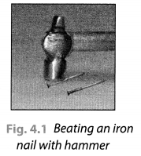
(But take care that you don’t hurt yourself in the process). Try to hit hard. Hit hard the aluminium wire also. Then repeat the same kind of treatment on the coal piece and pencil lead. Record your observations in Table 4.1.
Table 4.1 Malleability of Materials
| Object/Material | Change in Shape (Flattens/Breaks into Pieces) |
| Iron nail | Flattens |
| Coal piece | Breaks into pieces |
| Aluminium wire | Flattens |
| Pencil lead | Breaks into pieces |
Solution: This activity shows that iron and aluminium are malleable while coal piece and pencil lead are brittle. Thus, metals are malleable and non-metals are non-malleable.
Activity 2 (NCERTTextbook, Page 45)
Recall how to make an electric circuit to test whether electricity can pass through an object or not (Fig. 4.2).
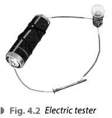
You might have performed the activity with various objects in Class VI. Now, repeat the activity with the materials mentioned in Table 4.2. Observe and group these materials into good conductors and poor conductors.
| S. No. | Materials | Good Conductor/Poor Conductor |
| 1. | Iron rod/nail | Good conductor |
| 2. | Sulphur | Poor conductor |
| 3. | Coal piece | Poor conductor |
| 4. | Copper wire | Good conductor |
Solution:
It shows that metals are good conductors of electricity and non-metals are poor conductors of electricity.
Activity 3 (NCERT Textbook, Page 46)
Let us check the nature of rust formed as a result of the reaction between iron, oxygen and water. Collect a spoonful of rust and dissolve it in a very little amount of water. You will find that the rust remains suspended in water. Shake the suspension well. Test the solution with red and blue litmus papers (Fig. 4.3).
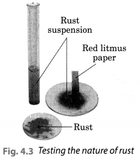
What do you observe? Is the solution acidic or basic?
Solution:
We observed that the red litmus paper turns blue which shows that the nqjure of rust is basic. Blue litmus paper do not show any colour change with the solution.
Activity 4 (NCERT Textbook, Page 47)
(To be demonstrated by the teacher in the class)
Take a small amount of powdered sulphur in a deflagrating spoon and heat it. If deflagrating spoon is not available, you may take a metallic cap of any bottle and wrap a metallic wire around it and give it the shape shown in Fig. 4.4 (a).
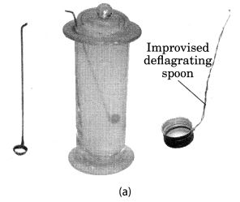
As soon as sulphur starts burning, introduce the spoon into a gas jar/glass tumbler [Fig. 4.4(a)]. Cover the tumbler with a lid to ensure that the gas produced does not escape. Remove the spoon after some time. Add a small quantity of water into the tumbler and quickly replace the lid. Shake the tumbler well. Check the solution with red and blue litmus papers [Fig. 4.4. (b)].
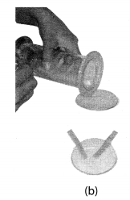
Solution:
We observed that the solution of oxide turns the blue litmus red which shows that the solution is acidic in nature. This also shows that oxide of non-metals is acidic in nature.
Activity 5 (NCERT Textbook, Page 48)
Take a 250 mL beaker/glass tumbler. Fill half of it with water. Now carefully cut a small piece of sodium metal. Dry it using filter paper and wrap it in a small piece of cotton. Put the sodium piece wrapped in cotton into the beaker. Observe carefully.
When reaction stops, touch the beaker. What do you feel? Has the beaker become hot? Test the solution with red and blue litmus papers. Is the solution acidic or basic?
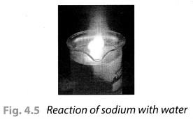
Solution:
On touching the beaker, it was felt hot. The solution turns the red litmus paper to blue which shows it is basic in nature. Blue litmus paper do not show any colour change with the solution.
Activity 6 (NCERT Textbook, Page 49)
Take samples of metals and non-metals given in Table 4.3 in separate test tubes and label them as A, B, C, D, E and F. With the help of a dropper add 5 mL of dilute hydrochloric acid to each test tube one by one. Observe the reactions carefully. If no reaction occurs in the cold solution, warm the test tube gently. Bring a burning matchstick near the mouth of each test tube.
Repeat the same activity using dilute sulphuric acid instead of dilute hydrochloric acid. Record your observations in Table 4.3.
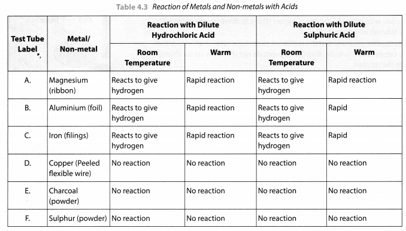
Solution:
This activity shows that metals usually displace hydrogen from dilute acids whereas non-metals do not do so and no hydrogen gas is evolved.
Activity 7 (NCERT Textbook, Page 50)
Prepare a fresh solution of sodium hydroxide in a test tube by dissolving 3-4 pellets of it in 5 mL of water. Drop a piece of aluminium foil into it. Bring a burning matchstick near the mouth of the test tube. Observe carefully.
Solution:
We observed that a colourless gas is evolved which burns with a pop sound. This shows that aluminium react with bases on heating to produce hydrogen gas.
Activity 8 (NCERT Textbook, Page 50)
Take five 100 mL beakers and label them A, B, C, D and E. Take about 50 mL of water in each beaker. Dissolve in each beaker a teaspoonful of each substance as indicated in Fig. 4.6 (a), (i) Keep the beakers undisturbed for some time, (ii) Record you observations in your notebook.
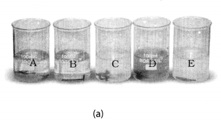
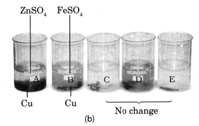
Beaker A: Copper sulphate (CuSO4) + Zinc granule (Zn), Beaker B: Copper sulphate (CuSO4) + Iron nail (Fe)
Beaker C: Zinc sulphate (ZnSO4) + Copper turnings (Cu), Beaker D: Iron sulphate (FeSO4) + Copper turnings (Cu)
Beaker E: Zinc sulphate (ZnSO4) + Iron nail (Fe)
Solution:
In beaker ‘A’ zinc (Zn) replaces copper (Cu) from copper sulphate (CuS04) solution. That is why the blue colour of copper sulphate changes to colourless and a powdery red mass of copper is deposited at the bottom of the beaker. The reaction can be represented as follows:
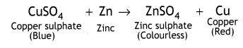
In beaker B, iron replaces copper from its solution. That is why the blue colour of copper sulphate changes to green colour of ferrous sulphate.

In beaker C, D and E no change in colour or heat evolution is observed. This indicates that the metals are unable to displace the other metals from its solution.
NCERT Solutions for Class 8 Science Chapter 4 – 1 Mark Questions and Answers
Question 1.
Non-metals cannot be drawn into wires. Why ? [DAV2008]
Answer:
Non-metals are not ductile, therefore they cannot be drawn into wires.
Question 2.
Complete the following equation :
Zn + 2HCl ——-> __+ __ [MSE (Chandigarh) 2007]
Answer:
Zn + 2HCl ——-> ZnCl2 + H2
Question 3.
Which of the following can be beaten into thin sheets ? [NCERT]
- Zinc
- Phosphorus
- Sulphur
- Oxygen.
Answer:
Zinc.
Question 4.
The number of metals is much ………….. than non-metals.
Answer:
More.
Question 5.
……… are the good conductors of heat and electricity.
Answer:
Metals.
Question 6.
Examples of metals are ………., ……. and ………
Answer:
Iron, sodium and nickel.
Question 7.
Examples of non-metals are ………. , …….. and …….
Answer:
Sulphur, chlorine and oxygen.
Question 8.
Explain the term ‘metallurgy’.
Answer:
Metallurgy is the science of extracting metals from their ores and purifying them for various uses.
Question 9.
State general steps involved in metallurgy of a metal.
Answer:
The general steps of metallurgy are :
- Concentration of ore.
- Reduction of the metal compound.
- Refining of metal.
Question 10.
Metals are (softer/harder) than non-metals.
Answer:
Harder.
Question 11.
Most non-metals are (bad/good) conductors of heat.
Answer:
Bad.
Question 12.
The property that allows the metals to be hammered into thin sheets is called (ductility/ malleability).
Answer:
Malleability.
Question 13.
Melting point of most non-metals is (higher/lower) than metals.
Answer:
Lower.
Question 14.
(Metals/non-metals) display lustre.
Answer:
Metals.
Question 15.
Arrange the following metals in the order of their decreasing chemical activity : magnesium, potassium, iron, gold.
Answer:
Potassium, magnesium, iron, gold.
Question 16.
Can copper displace iron from iron sulphate solution ? Give reasons.
Answer:
Copper cannot displace iron from iron sulphate because copper is less reactive than iron.
Question 17.
(Platinum/iron) is the member of the family of noble metals.
Answer:
Platinum.
Question 18.
Pure gold is (24/100) carats.
Answer:
24.
Question 19.
International standards of weights are made of (gold-silver/platinum-iridium) alloy.
Answer:
Platinum-iridium.
Question 20.
Gold dissolves in (aqua regia/aqueous solution of silver nitrate).
Answer:
Aqua regia.
Question 21.
Silver tarnishes due to (nitrogen oxides/hydrogen sulphide) in the air.
Answer:
Hydrogen sulphide.
Question 22.
Why is aluminium used in making aeroplanes ?
Answer:
Aluminium is used in making aeroplanes, as it is light and has high resistance to corrosion when exposed to air which aircrafts demand the most.
Question 23.
What type of oxides are formed by metals ?
Answer:
Metals form basic oxides.
Question 24.
What type of oxides are formed by non-metals ?
Answer:
Non-metals form acidic or neutral oxides.
Question 25.
How does phosphorus occur in nature ?
Answer:
Phosphorus occurs in nature in the combined state as it has strong affinity for oxygen.
Question 26.
Give the different forms of silica in nature.
Answer:
Silica occurs in nature as ordinary sand, flint, quartz and opal.
Question 27.
Which metal foil is used in packing of some medicine tablets ?
Answer:
Aluminium.
Question 28.
Name the soft metal which can be cut with a knife.
Answer:
Sodium or potassium.
Question 29.
Name the non-metal used in vulcanization.
Answer:
Sulphur.
Question 30.
Name one metal which is not malleable.
Answer:
Zinc or arsenic.
Question 31.
Name one non-metal which has lustre.
Answer:
Graphite or Iodine.
Question 32.
What would happen to iron railings if they are not painted ?
Answer:
They will get rusted.
Question 33.
Name the element commonly used for converting edible vegetable oils into vanaspati ghee.
Answer:
Hydrogen.
Question 34.
Name the element used for making containers of dry cells.
Answer:
Zinc.
Question 35.
Which metal is used for making radiators of cars ?
Answer:
Copper.
Question 36.
Name the metal whose salt is used for making photographic films.
Answer:
Silver.
NCERT Solutions for Class 8 Science Chapter 4 – 2 Mark Questions and Answers
Question 1.
White phosphorous has to be kept in water. Why ? [NCT2007]
Answer:
Phosphorus is to be kept in water to prevent its contact with air because it is highly reactive.
Question 2.
Can you store lemon pickle in an aluminium utensils ? Explain. [NCERT]
Answer:
We cannot store acidic food stuffs in aluminium utensils because aluminium reacts with acids. The food gets spoilt.
Question 3.
One day Reeta went to a jeweller’s shop with her mother. Her mother gave an old gold jewellery to the goldsmith to polish. Next day when they brought the jewellery back, they found that there was a slight loss in its weight. Can you suggest a reason for the loss in weight ? [NCERT]
Answer:
The goldsmith must have used acid to clean the gold jewellery and some gold must have dissolved in it. Therefore, there was loss in weight of the jewellery.
Question 4.
Write short notes on
- Metallurgical processes
- Uses of common metals and non-metals
- Noble metals
Answer:
- Metallurgical process can be divided into following steps :
- Concentration of the ore
- Reduction of metal compound to get free metal
- Refining of metal.
- Uses of common metals and non-metals :
Uses of metals – for making machinery, automobiles, industrial gadgets, building, bridges, cooking utensils, electrical gadgets, jewellery, sheets.
Uses of non-metals – oxygen is used by plants and animals for their survival, nitrogen is used by plants for their growth, chlorine is used in water purification to kill germs, sulphur is used for making sulphuric acid, tincture iodine has antiseptic properties. - Noble metals – Gold, silver and platinum are noble metals. They occur free in nature . and maintain their lustre for a long time. Platinum, gold and silver are used for making jewellery as they do not tarnish.
Question 5.
Purity of gold is 15 carat. What is the percentage’of gold in the ornaments ?
Answer:
24 carat purity of gold =100
∴ 1 carat purity or gold = 100/24
15 carat purity of gold = (100*15)/24 = 62.5 %
Question 6.
Give two uses of sulphur in chemical industry.
Answer:
- It is used in the manufacture of sulphuric acid.
- It is used in the manufacture of carbon disulphide, which is used as an industrial solvent.
Question 7.
How is sulphur useful in agriculture ? How is sulphur useful in medicine ?
Answer:
Sulphur powder is an excellent insecticide and fungicide. It is used in spraying fruit trees.
- Sulphur is the main constituent of skin ointments.
- Metallic sulphides of sulphur are used in the preparation of Ayurvedic medicines.
Question 8.
Give two important uses of silver.
Answer:
- It is used for making coins.
- Silver salts (silver bromide and silver iodide) are used for making photographic films.
Question 9.
Give two uses of gold.
Answer:
- Gold is used for making ornaments.
- Gold foils are used in the preparation of Ayurvedic medicines.
Question 10.
Give two uses of platinum.
Answer:
- It is used as a catalyst in the manufacture of sulphuric and nitric acid.
- Platinum catalytic converters use platinum as catalytic agent.
Question 11.
Which of the following will form acidic oxide and why :
P, K, Na, Ca?
Answer:
P (Phosphorus) will form acidic oxide because it is a non-metal.
Question 12.
You are given two materials X and Y. On hammering X is flattened, but Y breaks. Which one is a metal ?
Answer:
X is a metal because it flattens, i.e., it is malleable.
Question 13.
There are four materials A, B, C and D. A and D are hard and shiny, but B and C are dull and not very hard. Identify the metals and non-metals from A, B, C and D.
Answer:
A and D are metals.
B and C are non-metals.
Question 14.
Gaurav knows that wires can be made from copper and aluminium. He tries to make wire . from sulphur and carbon. Will he succeed ? Give reason also.
Answer:
No, he will not succeed because sulphur and carbon are non-metals. Non-metals are not ductile, that is, they cannot be drawn into wires.
NCERT Solutions for Class 8 Science Chapter 4 – 3 Mark Questions and Answers
Question 1.
- Identify the most reactive and least reactive metal amongst the followings :
Al, K, Cu, Au. - An iron knife kept dipped in blue copper sulphate solution changes to light green. Why ? Write the equation also. [KVS 2005]
Answer:
- Most reactive metal is K and least reactive metal is Au.
- An iron knife kept dipped in blue copper sulphate solution changes to light green because iron replaces copper from copper sulphate and forms iron sulphate. This happens because iron is more reactive than copper.
Fe + CuSO4 ——> FeSO4 + Cu
Question 2.
Give reasons, why :
- Silver is used in jewellery.
- Copper is used in electrical wiring.
- Sodium is stored in kerosene oil.
Answer:
- Silver does not corrode and it is malleable and ductile, therefore, it can be used in jewellery.
- Copper is used in electrical wiring because it is a good conductor of electricity.
- Sodium has low ignition temperature. It oxidises quickly and bums when exposed to air. It can only be stored in a liquid hydrocarbon like mineral oil or kerosene oil.
Question 3.
Taking examples of magnesium and sulphur explain how metals and non-metals produce oxides with different characteristics.
Answer:
Magnesium bums in oxygen to form magnesium oxide, which dissolves in water to form magnesium hydroxide – an alkali.
2Mg + O2 ——-> 2MgO
MgO + H2O ——-> Mg(OH)2
Magnesium hydroxide changes red litmus into blue.
Sulphur bums in air to form sulphur dioxide, which dissolves in water to form sulphurous acid – an acid which turns blue litmus into red.
S + O2 ——> SO2
SO2 + H2O ——–> H2SO3
Question 4.
Compare the following chemical properties of metals and non-metals.
- Formation of ions
- Action with dilute acids
- Action with hydrogen.
Answer:
- Formation of ions.
Metals form cations whereas non-metals form anions. - Action with dilute acids.
Metals react with dilute mineral acid to liberate hydrogen.
Non-metals do not react with dilute mineral acids. - Action with hydrogen.
Metals do not react with hydrogen but non-metals react with hydrogen to form hydrides.
NCERT Solutions for Class 8 Science Chapter 4 – 5 Mark Questions and Answers
Question 1.
What happens when [KVS 2008]
(a) Hydrochloric acid is poured on aluminium foils ?
(b) Sodium is placed in water ?
(c) Sulphur dioxide is dissolved in water ?
(Write the chemical equation of the reaction involved)
Answer:
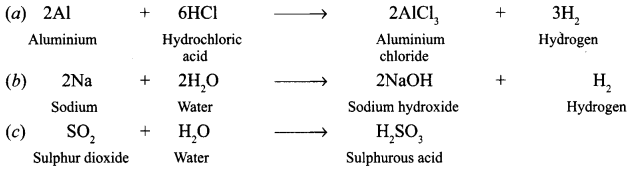
Question 2.
- A copper spoon had fallen into a container containing dil.HCl. What would happen to it in three days time ? [DAV2008]
- Give reasons for the following :
- Metals are used for making bells.
- We can’t use pure gold to make jewellery.
- A metal ribbon bums in air with bright white light and forms a white powder.
- Which metal is this ?
- Give the equation of the reaction taking place.
- The metallic oxide formed would be acidic or basic in nature ?
Answer:
- Nothing will happen as copper does not react with hydrochloric acid.
-
- Metals have the property of sonorosity so they are used for making bells.
- Pure gold cannot be used for making jewellery because it is very soft.
-
- Magnesium.
- 2Mg + O2 ——> 2MgO
- Basic in nature.
Question 3.
Give reasons for the following : [KVS 2007]
- Silver is used in making mirrors.
- Aluminium is used to make electrical wire.
- Iron is used in construction of bridges and houses.
- Graphite is used as an electrode in the dry cell.
- Iron sheets are galvanised before use.
Answer:
- Silver has the ability to reflect light, therefore, it is used for making mirrors.
- Aluminium is a good conductor of electricity, so, it is used for making electrical wires.
- Iron is a strong metal, therefore, it is mixed with concrete to make bridges and houses.
- Graphite is a good conductor of electricity, therefore, it is used as an electrode in dry cell.
- Iron sheets are galvanised before use so that they do not corrode.
Question 4.
Which of the following statements is correct ? [NCERT]
- All metals are ductile.
- All non-metals are ductile.
- Generally, metals are ductile.
- Some non-metals are ductile.
Answer:
Generally, metals are ductile.
Question 5.
Fill in the blanks : [NCERT]
- Phosphoms is a very ………… non-metal.
- Metals are …….. conductors of heat and ………
- Iron is ……… reactive than copper.
- Metals react with acids to produce ………. gas.
Answer:
- reactive
- good, electricity
- more
- hydrogen.
Question 6.
Mark ‘T’ if the statement is true and ‘F’ if it is false. [NCERT]
- Generally, non-metals react with acids. ( )
- Sodium is a very reactive metal. ( )
- Copper displaces zinc from zinc sulphate solution. ( )
- Coal can be drawn into wires. ( )
Answer:
- F
- T
- F
- F
Question 7.
Some properties are listed in the following Table. Distinguish between metals and non-metals on the basis of these properties. [NCERT]
| Properties | Metals | Non-metals |
| 1. Appearance 2. Hardness 3. Malleability 4. Ductility 5. Heat conduction 6. Conduction of electricity |
Answer:
| Properties | Metals | Non-metals |
| 1. Appearance | Solid at room temperature except mercury. | They are either solids or gases except bromine (liquid). |
| 2. Hardness | They are hard | They are brittle. |
| 3. Malleability | Malleable | Non-malleable |
| 4. Ductility | Ductile | Non-ductile |
| 5. Heat conduction | Good conductors | Bad conductors |
| 6. Conduction of electricity | Good conductors | Bad conductors |
Question 8.
Give reasons for the following : [NCT 2010]
- Aluminium foils are used to wrap food items.
- Immersion rods for heating liquids are made up of metallic substances.
- Copper cannot displace zinc from its salt solution.
- Sodium and potassium are stored in kerosene.
Answer:
- Aluminium is a highly malleable metal and can be made into foils. So, it can be used to wrap food items.
- Metals are good conductors of electricity, therefore, they are used for making immersion rods.
- Copper is less reactive than zinc. Therefore, it cannot displace zinc from its salt solution.
- Sodium and potassium are highly reactive metals. On exposure to air, they get oxidized. To avoid this they are stored in kerosene.
Question 9.
Match the substances given in Column I with their uses given in Column II. [NCERT]
| Column I | Column II |
| (a) Gold | (i) Thermometers |
| (b) Iron | (ii) Electric wire |
| (c) Aluminium | (iii) Wrapping food |
| (d) Carbon | (iv) Jewellery |
| (e) Copper | (v) Machinery |
| (f) Mercury | (vi) Fuel |
Answer:
| Column I | Column II |
| (a) Gold (b) Iron (c) Aluminium (d) Carbon (e) Copper (f) Mercury |
(iv) Jewellery (v) Machinery (iii) Wrapping food (vi) Fuel (ii) Electric wire (i) Thermometers |
Question 10.
What happens when [NCERT]
- Dilute sulphuric acid is poured on copper plate ?
- Iron nails are placed in copper sulphate solution ? Write word equations of the reactions involved.
Answer:
- When sulphuric acid is poured on copper plate, copper sulphate and hydrogen gas are produced.
Copper + Sulphuric acid ——-> Copper sulphate + Hydrogen (gas). - When iron nails are placed in copper sulphate solution, iron sulphate and copper are formed.
Iron + Copper sulphate ——-> Iron sulphate + Copper
Question 11.
Saloni took a piece of burning charcoal and collected the gas evolved in a test tube. [NCERT]
(a) How will she find the nature of the gas ?
(b) Write down word equations of all the reactions taking place in this process.
Answer:
(a) The nature of gas can be found by passing it lime water, which will turn milky.
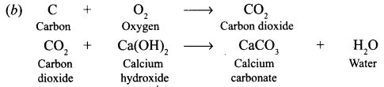
Question 12.
List different uses of metals that you come across in everyday life.
Answer:
Metals are used for making
- machinery
- automobiles, aeroplanes, trains, etc.
- pins, cooking utensils, electrical gadgets.
- electrical wires.
- thin sheets used for wrapping of food items, medicines, etc.
Question 13.
Choose appropriate words from the brackets and complete the statements.
- Noble gases are found in (free state/compound forms).
- Non-metals are generally (malleable/brittle).
- Potassium after combustion will form (acidic oxide/basic oxide).
- (Iodine/bromine) has antiseptic properties.
- German silver has (copper/silver) as major constituent.
Answer:
- Free state
- Brittle
- Basic oxide
- Iodine
- Copper
Question 14.
State whether the following statements are True or False :
- Sodium is more reactive than magnesium.
- Magnesium reacts with cold water.
- All metals exist in solid form at room temperature.
- Gallium has a low melting point.
- Gold is alloyed with copper to make it hard.
Answer:
- False
- True
- True
- False
- True
Question 15.
From among the set of metals — sodium, zinc, iron, copper, silver, select the following giving equations for each reaction :
(a) Two metals which will liberate hydrogen from water.
(b) One metal which is used to prepare hydrogen gas in the laboratory.
(c) One metal which will displace copper from copper sulphate solution.
(d) One metal which will not displace copper from copper sulphate solution.
Answer:
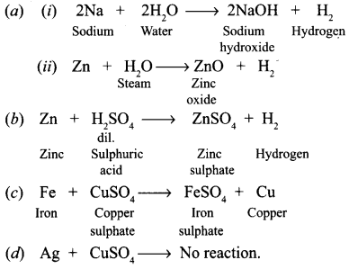
Question 16.
Name one metal which will fit each of the following description. Also write the equation of the reaction.
(a) A metal which floats on water, reacts with it and forms an alkali.
(b) A metal that displaces silver from silver nitrate solution.
(c) A metal which is used for galvanising iron.
(d) A metal that reacts with oxygen without burning.
(e) A metal that bums in oxygen with a bright light.
Answer:
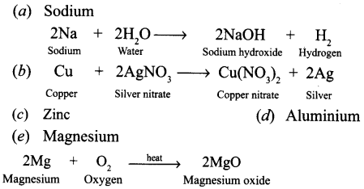
Question 17.
A set of metals in order of their increasing chemical reactivity is given below : silver, copper, lead, iron, zinc, magnesium and sodium.
- Which of the above metals is stored in kerosene ?
- Which metals will react with cold water ?
- Which gas will be liberated when metals react with cold water ?
- Which of the metals will react with oxygen when heated ?
- Which of the metals become black in the presence of hydrogen sulphide ?
Answer:
- Sodium
- Sodium
- Hydrogen
- Zinc, magnesium
- Silver
NCERT Solutions for Class 8 Science Chapter 4 MCQs
Question 1.
Which of the following properties is generally not shown by metals?
(a) Ductility
(b) Sonorous
(c) Dullness
(d) Electrical conduction
Answer:
(c)
Question 2.
The most abundant element in the universe is
(a) hydrogen
(b) oxygen
(c) helium
(d) carbon
Answer:
(a)
Question 3.
The ability of metals to be drawn into wires is known as
(a) ductility
(b) conductivity
(c) malleability
(d) sonorousity
Answer:
(a)
Question 4.
The most abundant element in the earth crust is
(a) iron
(b) oxygen
(c) silicon
(d) aluminium
Answer:
(b)
Question 5.
Galvanisation is a method qf protecting iron from rusting by coating with a thin layer of
(a) silver
(b) galium
(c) zinc
(d) aluminium
Answer:
(c)
Question 6.
The most abundant ihetal in earth crust is
(a) Cu
(b) Al
(c) Fe
(d) Zn
Answer:
(b)
Question 7.
An alloy is
(a) a compound
(b) a heterogeneous mixture
(c) a homogeneous mixture
(d) an element
Answer:
(c)
Question 8.
In extraction of copper, the flux used is
(a) FeO
(b) Si02
(c) CaO
(d) FeSi03
Answer:
(b)
Question 9.
Alloys are homogeneous mixtures of a metal with a metal or non-metal. Which among the following aljoys contain non-metal as one of its constituents?
(a) Amalgam
(b) Brass
(c) Bronze
(d) Steel
Answer:
(d)
Question 10.
Which of the following is purest form of carbon?
(a) Diamond
(b) Graph’ite
(c) Fullerenes
(d) Charcoal
Answer:
(c)
Question 11.
Which among the following alloys contain mercury as one of its constituents?
(a) Alnico
(b) Solder
(c) Stainless steel
(d) Zinc Amalgam
Answer:
(d)
Question 12.
Which of the following methods is suitable for preventing an iron frying pan from rusting?
(a) Applying paint
(b) Applying grease
(c) Applying a coating of zinc
(d) all of these
Answer:
(c)
Question 13.
Generally, non-metals are not conductors of electricity, which of the following is a good conductor of electricity?
(a) Fullerenes
(b) Graphite
(c) Diamond
(d) Sulphur
Answer:
(b)
Question 14.
Food cans are coated with tin and not with zinc because
(a) zinc is costlier than tin
(b) zinc is less reactive than tin
(c) zinc is more reactive than tin
(d) zinc has a higher melting point than tin
Answer:
(a)
Question 15.
Electrical wires have a coating of an insulating materials. The material, generally used is
(a) sulphur
(b) graphite
(c) PVC
(d) none of these
Answer:
(c)
Question 16.
Which of the following non-metals is a liquid?
(a) Sulphur
(b) Phosphorus
(c) Carbon
(d) Bromine
Answer:
(d)
More CBSE Class 8 Study Material
- NCERT Solutions for Class 8 Maths
- NCERT Solutions for Class 8 Science
- NCERT Solutions for Class 8 Social Science
- NCERT Solutions for Class 8 English
- NCERT Solutions for Class 8 English Honeydew
- NCERT Solutions for Class 8 English It So Happened
- NCERT Solutions for Class 8 Hindi
- NCERT Solutions for Class 8 Sanskrit
- NCERT Solutions